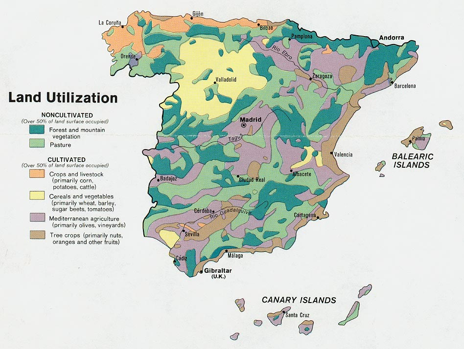

Шпанија je и после Другог светског рата била углавном аграрна земља, данас је она средње развијена држава у којој доминира терцијарни сектор — у укупном националном дохотку учествује са 56%. Секундарни сектор учествује са 39%, а пољопривреда има удео 5%. Запослени у пољопривреди чине 12% свих активних, док у индустрији и рударству ради 25% и у услугама 63%. На побољшању пољопривредне производње Шпанија је у последњих двадесетак година доста урадила, а то потврђују и бројне хуерте. Од обрадивих површина (470.000 ha) оранице и воћњаци заузимају 42%, ливаде и пашњаци 21%, шуме 30%, а неплодно је око 7%. Уз то, наводњава се око 3,2 милиона хектара. И данас највећи део пољопривредних површина припада велепоседницима (око 50%), а њихова имања — латифундије углавном имају површину већу од 250 ha. Мала имања су испод 50 ha, мада има доста мањих од једног ha. Стопа незапослености у другој декади 2015. године, у Шпанији износила је 21%.
